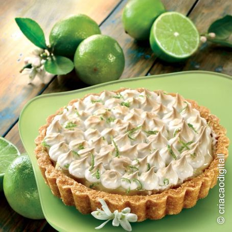

Torta De Limão

Lista de Ingredientes
-
Massa
-
200 g de biscoito de maisena
- 150g de margarina
- Recheio
- 1 lata de leite condensado (395g)
- 1 caixa creme de leite(200g)
- suco de 4 limões
- raspas de 2 limões
- Cobertura
- 3 ou 4 claras de ovos
- 3 colheres (sopa) de açúcar
- raspas de 2 limões para decorar
- Massa:
- Triture o Biscoito de Maisena em um liquidificador ou processador
- Junte a margarina e bata mais um pouco
- Despeje a massa em uma forma de fundo removível (27 cm de diâmetro)
- Com as mão, espalhe os biscoitos triturados no fundo e nas laterais da forma,cobrindo toda área de maneira uniforme
- Leve ao forno médio(180° C), preaquecido, por aproximadamente 10 minutos
- Recheio:
- Bata todos os ingredientes no liquidificador(exceto as raspas de limão) até obter um creme liso e firme
- Recheie a massa já assada e leve á geladeira por 30 minutos.
- Corbertura:
- Bata as Claras em neve e acrescente o açúcar.
- Misture até obter um ponto de suspiro e leve ao forno até dourar.
- Desenform a torta(sem retirar o fundo falso), despeje a corbertura e acrescente as raspas de limão.
Veja No Youtube: https://www.youtube.com/watch?v=WqcwkccBOss